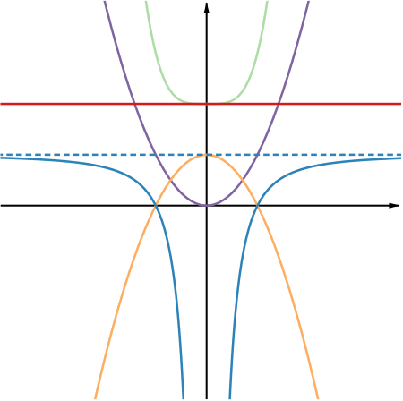
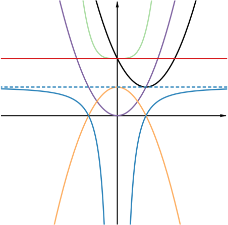
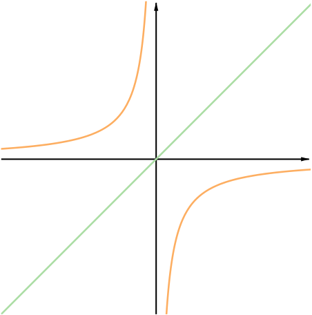
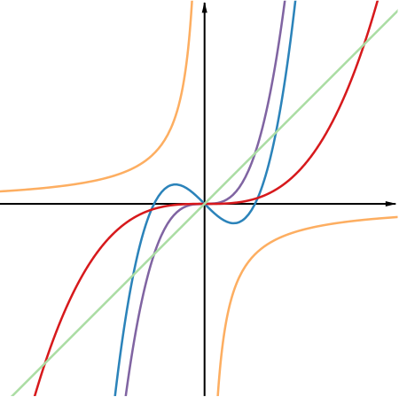
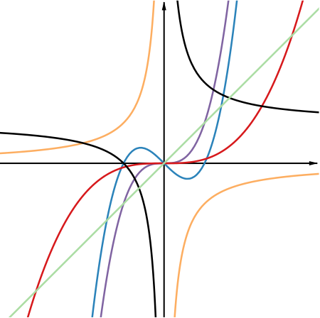

For some of the following functions, work out the values of f(1), f(−1), f(2), f(−2), and so on.
f(x)=x2
f(x)=2
f(x)=1−x2
f(x)=x4+2
f(x)=1−1x2
f(x)=x2−2x+2
What did you notice as you worked out these values?
Now carefully sketch the graphs of the functions on the same set of axes.
What did you notice as you sketched the graphs?
Did your ideas change as you added new graphs to your axes?
What are the points of intersection of some of the graphs?
If you worked out the values of f(1), f(−1), f(2), f(−2) for, say f(x)=x2, and f(x)=1−1x2, you may have noticed that
f(−1)f(−2)=f(1)=f(2)⋮
and in general f(−x)=f(x) for any value of x for which the function is defined.
Is this true for any of the other functions in the list?
You may have noticed many relationships between the graphs that you were asked to sketch, but in particular, you may have noticed that the graphs of the first five functions are symmetric about the y-axis. Adding the graph of the function f(x)=x2−2x+2 breaks this symmetry.


What can you say about the graph of the function f(x)=x2−2x+2? How could you adapt the function so that it doesn’t break the symmetry of the diagram?
Functions for which f(−x)=f(x) for all input values of x are called “even functions”. The graph of an even function is symmetric about the y-axis. In this example, all the functions are even except for the last one. Can you think of another function which is even and one which is not even?
If you found the coordinates of points of intersection of any of the first five graphs, you may have noticed that they come in pairs of the form (a,b) and (−a,b), so they are symmetric about the y-axis. Can you explain this?
The condition that f(−x)=f(x) seems to connect quite nicely to the graph y=f(x) having the y-axis as a line of symmetry. The condition is saying that whatever our input x is, if we reflect the point (x,f(x)) in the y-axis we get another point on the graph y=f(x). Therefore the function behaves the same way on either side of the y-axis.
On a new set of axes, carefully sketch graphs of the following functions. Again, for some of the functions you may find it helpful to work out f(1), f(−1), f(2), f(−2) and so on. Note down your ideas as you sketch each graph.
f(x)=x
f(x)=−1x
f(x)=x3
f(x)=x310
f(x)=x(x−1)(x+1)
f(x)=1+1x
What did you notice this time?
This time you may have found that for the first few functions,
f(−1)f(−2)=−f(1)=−f(2)⋮
and in general f(−x)=−f(x) for any value of x for which the function is defined.
Is this true for all the functions in the list?
When you sketched the first two graphs you may have noticed that y=−x and y=x are lines of symmetry. Adding the third graph breaks this symmetry, but you may still feel that there is something symmetric about the diagram with the first three graphs drawn.

The graphs of the first five functions have rotational symmetry about (0,0), so that when you rotate the graph through 180∘ about (0,0) it looks the same. The symmetry of the diagram is broken by adding the graph y=1+1x. Does this agree with what you noticed if you evaluated the functions for certain values of x?


Functions for which f(−x)=−f(x) for all input values of x are called “odd functions”. The graph of an odd function has rotational symmetry about (0,0), so that when you rotate the graph through 180∘ about the point (0,0) it looks the same. Can you think of another function which is odd and one which is not odd?
What can you say about points of intersection of odd functions? Try to work with some sketches of functions to explore this as well as using some of the odd functions in this example.
We can interpret the condition f(−x)=−f(x) as saying that if you reflect the point (x,f(x)) in the y-axis and then in the x-axis you get another point on the graph y=f(x). You may be wondering how this combination of reflections corresponds to the graph y=f(x) having rotational symmetry. This resource about Symmetry explores this idea.
We’ve asked you to suggest examples of functions which are even, not even, odd, or not odd. Do you think there is a function which is both even and odd?